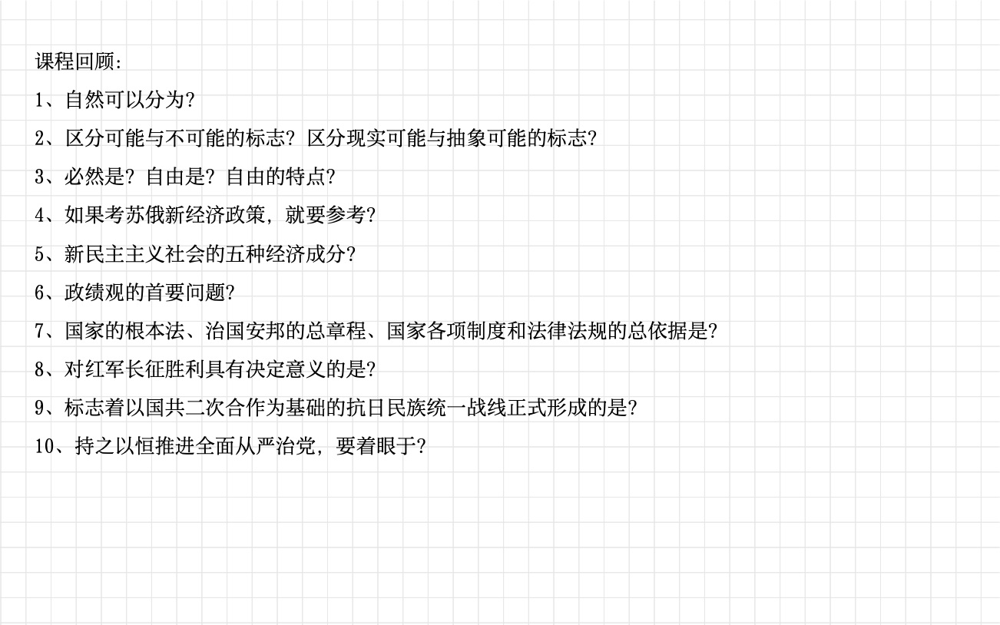

课程回顾原图

1、自然可以分为？
自然可以分为天然自然（自在自然）和人化自然（人工自然）。前者是尚未被人的实践活动改造的自然；后者是被人的实践改造过、打上人的目的印记的自然。
2、区分可能与不可能的标志？区分现实可能与抽象可能的标志？
区分可能与不可能的标志是看其在现实中是否有客观根据；区分现实可能与抽象可能的标志是看其实现的条件是否具备（根据是否充分、条件是否成熟）。
3、必然是？自由是？自由的特点？
必然是客观事物联系和发展中确定不移、不可避免的趋势，即规律性；自由是对必然的认识和对客观世界的改造；自由的特点是具体性、历史性、相对性，即有条件的、不断发展着的。
4、如果考苏俄新经济政策，就要参考？
参考列宁的《论粮食税》（1921年），它是新经济政策的重要文献。
5、新民主主义社会的五种经济成分？
社会主义性质的国营经济、半社会主义性质的合作社经济、农民和手工业者的个体经济、私人资本主义经济、国家资本主义经济。
6、政绩观的首要问题？
首要问题是“政绩为谁而树”，即坚持人民至上、为民造福，为民造福是最大政绩。
7、国家的根本法、治国安邦的总章程、国家各项制度和法律法规的总依据是？
宪法。宪法是国家的根本法，是治国安邦的总章程，是国家各项制度和法律法规的总依据。
8、对红军长征胜利具有决定意义的是？
遵义会议。它开始确立以毛泽东同志为主要代表的马克思主义正确路线在党中央的领导地位，在极其危急的关头挽救了党、挽救了红军、挽救了中国革命，对红军长征的胜利具有决定意义。
9、标志着以国共二次合作为基础的抗日民族统一战线正式形成的是？
1937年9月，国民党中央通讯社发表《中共中央为公布国共合作宣言》，蒋介石发表实际承认共产党合法地位的谈话，标志着以国共第二次合作为基础的抗日民族统一战线正式形成。
10、持之以恒推进全面从严治党，要着眼于？
着眼于解决党内存在的突出问题，保持党的先进性和纯洁性，确保党长期执政、国家长治久安，以党的自我革命引领社会革命。